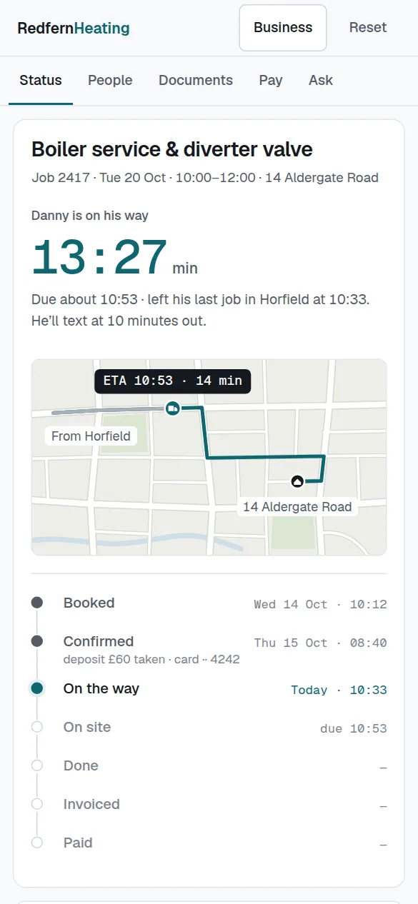

The garage that comes to the driveway, booked properly.
A mobile mechanic’s website needs the postcodes you cover, a clear list of what you can and cannot do on a driveway or at the roadside, and a booking form that takes the registration, the fault and where the car is. It should then tell the customer when you are on your way and remind them when the next service is due.

What should a website for mobile mechanics do?
- The towns and postcodes you cover, so nobody books from outside your area.
- What you can do on a driveway or at the roadside, and what needs a garage, so customers do not book the wrong thing.
- Booking that takes the registration, the job or fault, and the address where the car will be.
- A page for each job people search for: servicing, brakes, batteries, diagnostics and cars that will not start.
- Whether you collect and deliver for MOTs, since the test itself has to be done at an approved test centre.
How do customers choose a mobile mechanic?
Customers ring a mobile mechanic when the car will not start, when they cannot get it to a garage, or because they would rather not lose a day waiting in one. They want to know quickly whether you cover their street and whether the job can be done where the car is. The calls come while you are under a car, and a job that went well is rarely followed by a reminder when the next service is due.
The three automations that matter most
On-my-way texts
The customer needs the keys ready and the car clear, and a text with your arrival time saves the call asking where you are.
How it worksMissed-call text-back
A driver whose car will not start rings the next mechanic if you do not pick up, and a text in the first minute keeps them with you.
How it worksService reminders
Once you have serviced a car you know when the next one is due, and a reminder brings the customer back to you rather than to a garage.
How it worksTry it as a mobile mechanic
The live demos, set up for mobile mechanics with a made-up business. You play the customer, then see what you would see.
Builds that fit
Working builds for made-up businesses. Open any of them on your phone and use it.
Mobile mechanics: questions people ask
Can customers book a mobile mechanic online?
Yes. They enter the registration, choose the job or describe the fault, and give the address where the car will be. Only the slots you open are offered, and postcodes outside your area are turned away politely before they reach you.
Can a mobile mechanic do an MOT?
No. An MOT has to be carried out at an approved test centre. Many mobile mechanics collect the car, take it for its test and bring it back, and if you offer that, the website should say so.
How do I stop people booking jobs I cannot do on a driveway?
List the jobs you do on site and the ones that need a garage, and make the booking ask what the car needs. Anything outside the list arrives as an enquiry for you to look at, not as a booked slot.
More in every question, answered.